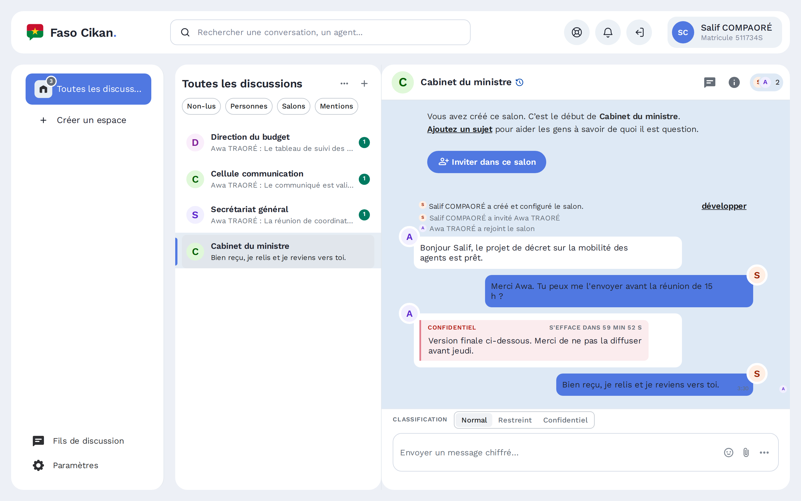

Classifiez chaque message
Diffusion restreinte ou Confidentiel. Un message classifié ne se transfère pas, ne se modifie pas et s'efface sur tous les appareils à l'échéance choisie.
Échangez entre services et ministères. Vos messages sont chiffrés sur votre appareil et restent sur les serveurs de l'administration.

Diffusion restreinte ou Confidentiel. Un message classifié ne se transfère pas, ne se modifie pas et s'efface sur tous les appareils à l'échéance choisie.
Pas de numéro de téléphone. Mot de passe et code à usage unique à chaque connexion.
Un agent muté ou radié perd l'accès sur tous ses appareils, en une seule opération.
Serveur, base de données et identités restent dans l'infrastructure de l'administration.
Le chiffrement et le déchiffrement se font uniquement sur les appareils des agents. Nous documentons aussi ce que le serveur voit, pour que chacun sache à quoi s'en tenir.
Les comptes sont créés par le service des ressources humaines de votre ministère.
Se connecter